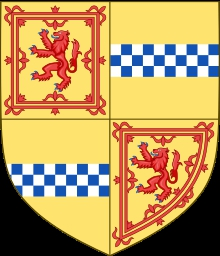

1502221 Princess Marjorie Bruce
Prinsessa av Scotland. Blev högst 20 år.

Far:
Mor:
Född:
1296 Dundonald Castle, Ayrshire, Scotland. [1]
Död:
1316-03-02 Paisley, Scotland. [1]
Barn:
Personhistoria
1296
Födelse 1296 Dundonald Castle, Ayrshire, Scotland
[1]
1316
Död 1316-03-02 Paisley, Scotland
[1]
Källor